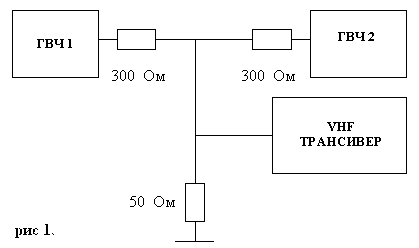

В настоящее время все больше радиолюбителей приобретают УКВ радиостанции ведущих зарубежных фирм. Добротно сработанные, имеющие "навороты" на все случаи в жизни, все они имеют, на мой взгляд, существенный недостаток – низкую устойчивость к интермодуляционным помехам. Это объясняется тем, что в погоне за максимально возможной чувствительностью, заведомо выше заявленной, все фирмы–производители применяют на входе приемника усилитель высокой частоты с большим усилением. В этом случае не требуется скрупулезная настройка при массовом производстве.
Входные полосовые фильтры, которые следуют, как правило, за УВЧ, не спасают положения, так как из-за стремления уменьшить их размеры, их конструктивно выполняют с низкой добротностью. Бороться с помехами предлагается установкой в радиостанции тоновых и кодовых шумоподавителей, что не всегда применимо в радиолюбительской практике. Использование внешних антенных фильтров часто не оправдывает себя из-за их высокой стоимости и громоздкости. При желании слушать служебные частоты, антенные фильтры вообще не применимы.
Автором были измерены интермодуляционные характеристики нескольких радиостанций разных производителей. Для этого была собрана схема из двух генераторов, изображенная на рис.1.

С генератора ГВЧ 1 подавался немодулированный сигнал с
частотой 150,000 МГц и фиксированным уровнем 2500 мкв.
Величина напряжения ГВЧ 1 является типичной для сигналов
пейджерных передатчиков, имеющих мощность 0,2-1,5 кВт.,
которые взаимодействуя с сигналами служебных радиостанций
образуют комбинационные помехи.
На генераторе ГВЧ 2 была
установлена частота 155,000 МГц, а уровень сигнала
регулировался таким образом, чтобы появился сигнал
комбинационной помехи на частоте 145,000 МГц.
Результаты
испытаний сведены в таблицу:
| Модель радиостанции |
Уровень сигнала, вызывающий помеху,
мкВ. |
| Alinko DR-130T | 316 |
| Alinko DJ-182T | 10 |
| Alinko DR-599T | 316 |
| Motorola GP-300 | 2500 |
| Motorola GМ-300 | 2500 |
| Motorola GP-68 | 316 |
| YAESU FT-2500 | 3160 |
| YAESU FT-50R | 1,5 |
| Standart C-108 | 1,5 |
Из таблицы видно, что наименьшей помехоустойчивостью обладают миниатюрные радиостанции, добротность контуров у которых, стремится к нулю. Кстати, эти радиостанции имеют и наивысшую чувствительность - значительно лучше, чем указанные в документации 0,12 мкВ.
Однако эта повышенная чувствительность никак не может быть использована при работе в эфире на наружную антенну - избыточное усиление перегружает преобразователь приемника, вызывая появление множества интермодуляционных помех. Полезный сигнал попросту "тонет" в сигналах десятков других радиостанций слышимых с уровнем ничуть не меньшим. Однако, если подключить внешнюю антенну через конденсатор ёмкостью 1,5–3 пФ., приём становится вполне удовлетворительным. Аналогичный эффект происходит и при подключении внешней антенны через резистор 0,5-1,5 кОм.
И это очень легко проверить !!!
Для борьбы с перегрузкой смесителя , в некоторые модели радиостанций встраивают отключаемый аттенюатор, улучшающий динамический диапазон на величину затухания, но не решающий полностью проблемы.
Для проверки предположения об избыточном усилении УВЧ, в радиостанции Alinko DR-130T был удален тразистор УВЧ Q1, а на его место поставлен конденсатор 10 пФ cоединивший вход и выход УВЧ. После подстройки контуров была измерена чувствительность, которая упала до 0,8-1,0 Мкв. Уровень сигнала вызывающий интермодуляционную помеху изменился с 316 мкВ до 10 мВ !!!
При работе радиостанции на коллиниарную антенну в центре Алматы полностью отсутствовали помехи от других радиостанций в течении недели.
Таким образом предположение об избыточном усилении в УВЧ полностью оправдалось.
Для проверки возможности снижения усиления можно включить на входе приемника аттенюатор и изменяя его затухание проверять чувствительность, пока она не начнет заметно уменьшаться. Обычно избыточное усиление оценивается величинами 25-30 дБ. Следовательно, примерно на такую же величину можно увеличить и интермодуляционную избирательность приёмника.
Уменьшить усиление УВЧ можно разными способами:
В
радиостанции Alinco DR-130T был заменен резистор R44 в цепи
истока транзистора на другой, величиной 100 Ом и удален
шунтирующий конденсатор С125. Вместо резистора R 71 величиной
100 Ом была установлена перемычка. Емкость конденсатора С 124
с 1000 пФ была уменьшена до 15 пФ, а емкость конденсатора С 88
с 22 пФ увеличена до 36 пФ. По этой методике было переделано
три радиостанции с неизменно положительным результатом. В
радиостанции Alinco DR-599Т усиление было уменьшено путем
удаления конденсатора С4 и замыкания второго затвора
транзистора Q1 на корпус. В радиостанции YAESU FT-50R был
увеличен резистор R 1024 c 220 Ом до 560 Ом и уменьшены
переходные емкости С1068 и С1069 до 3 пФ. Все обозначения
приведены по приципиальным схемам идущих в комплекте с
радиостанциями.
Указанные доработки позволили почти полностью исключить интермодуляционные помехи от других радиостанций, при полном сохранении чувствительности приведенной в инструкции фирмы-производителя. Никаких регулировок производить не потребовалось.
После модернизации уровень сигнала вызывающего появление комбинационной помехи указан в таблице:
| Модель радиостанции | Уровень сигнала, вызывающий помеху, мкВ. |
| Alinco DR-130T | 3160 |
| Alinco DR-599T | 1000 |
| YAESU FT-50R | 10 |
В радиостанции Alinco DR-599T дальнейшему росту динамики препятствуют коммутирующие диоды АIR- диапазона, ток через которые лежит в пределах 2,2-3 мА. При включении антенны в обход этих диодов возможно увеличение уровня мешающего сигнала ещё на 500 Мкв. В общем случае, необходимо сохраняя ток через транзистор УВЧ не ниже исходного, снижать усиление вводя ООС и уменьшать переходные емкости до величин порядка 1-5 пФ. Следует, однако отметить, что при изменении переходной емкости на входе УВЧ может расстроится фильтр-пробка снижающий уровень ВЧ-напряжения при передаче, что может привести к выходу транзистора УВЧ из строя. Для исключения этого требуется коррекция емкости входящей в контур фильтра-пробки, в сторону увеличения. Это замечание относится только для автомобильных радиостанций с мощность более 10 Вт.
Буду рад, если приведенная информация кому-то поможет сохранить нервы и деньги.
Данная информация является свободно распространяемая в
любых видах.
Автор не несет никакой ответственности
за повреждения радиостанций при проведении указанных
доработок.
Автор не несет никакой ответственности за
отсутствие ожидаемого эффекта при выполнении указанных
доработок.
73!!!
А. В. Перепечко (UN7GET),
480000
г.Алматы, Главпочтамт, а\я 101
Перепечатано с сервера кубанских радиолюбителей